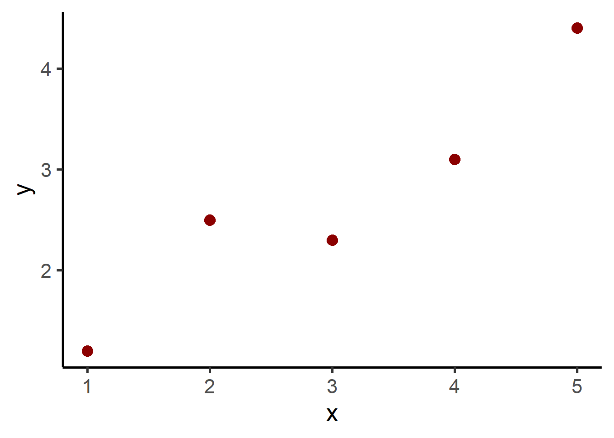
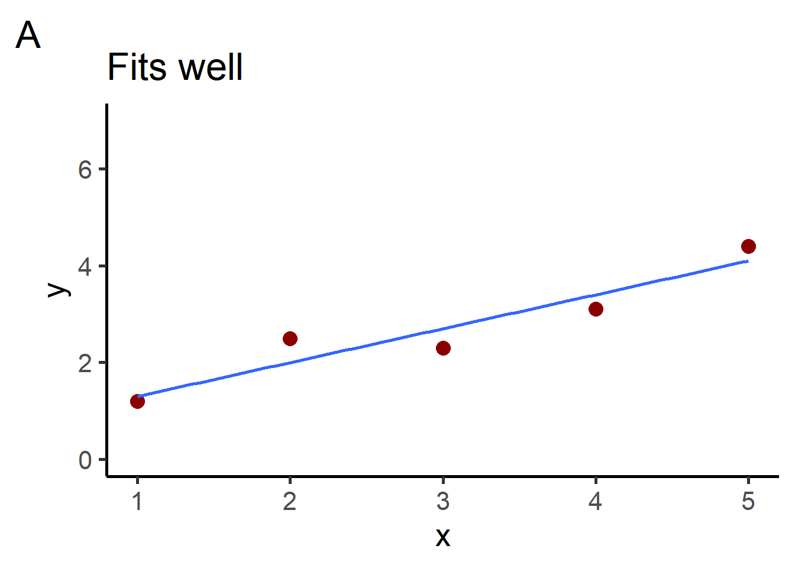
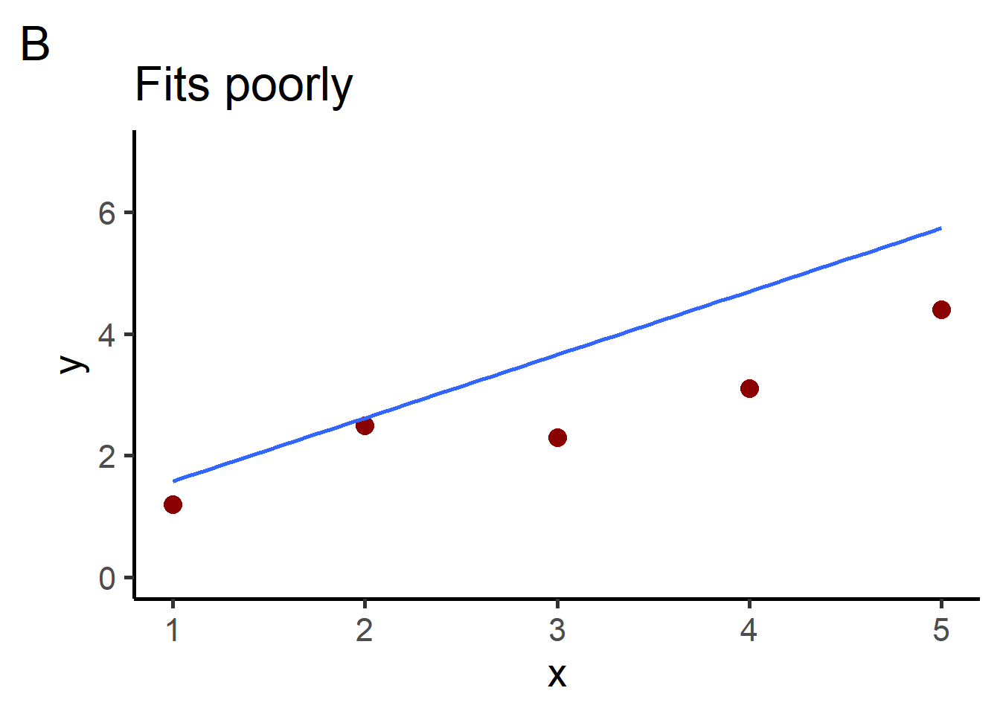
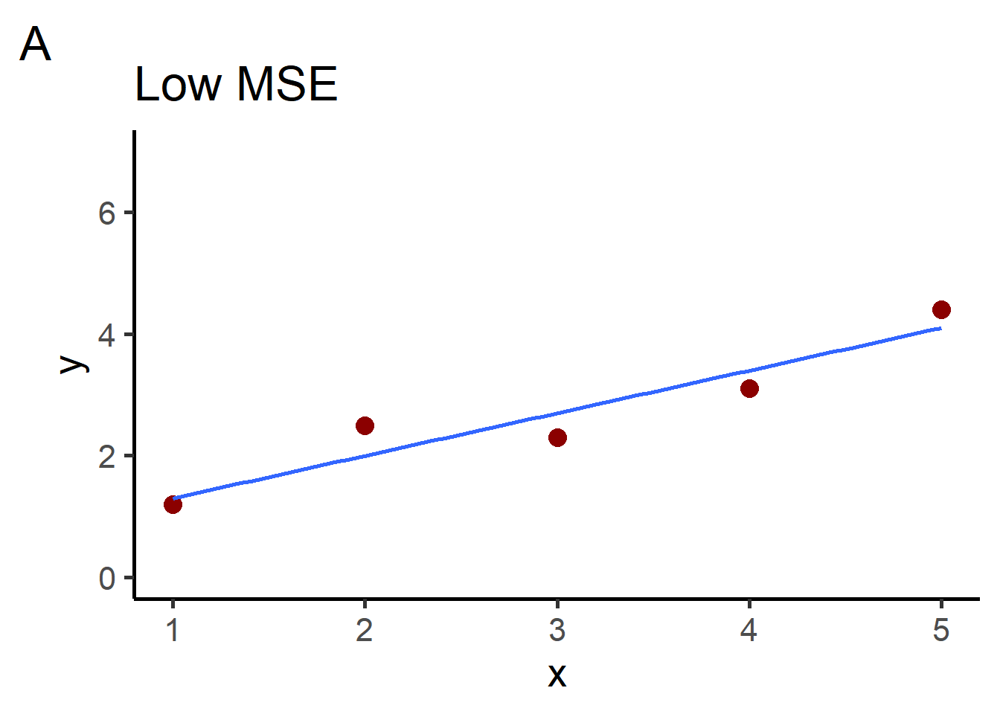
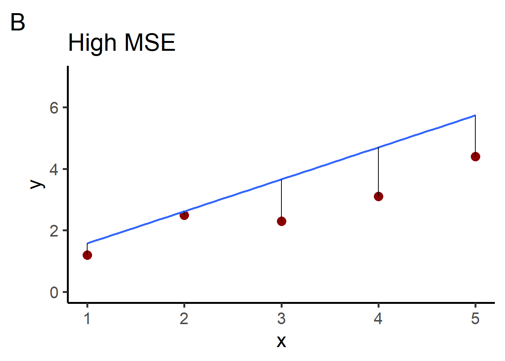
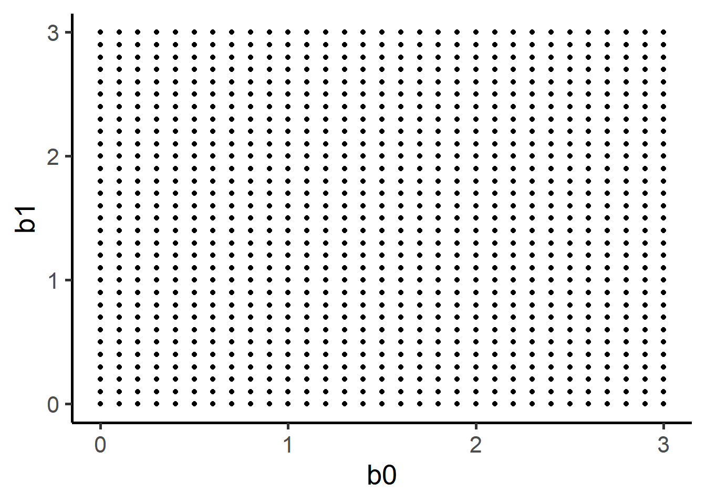
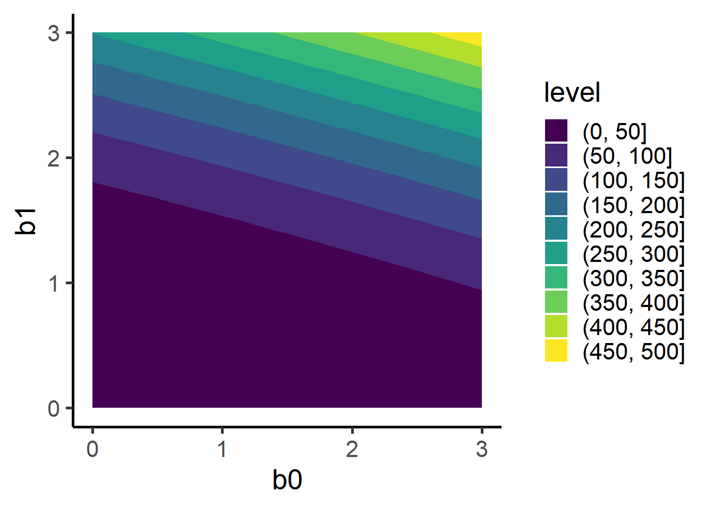

Call:
lm(formula = y ~ 1 + x, data = data)
Coefficients:
(Intercept) x
0.6 0.7
# with infer workflow data %>%specify(y ~1+ x) %>%fit()
# A tibble: 2 × 2
term estimate
<chr> <dbl>
1 intercept 0.600
2 x 0.7
5 Model fitting basics
Linear model
# A tibble: 5 × 2
x y
<dbl> <dbl>
1 1 1.2
2 2 2.5
3 3 2.3
4 4 3.1
5 5 4.4

We can see which fits better with our eyes.



x
y
pred
err
sq_err
1
1.2
1.3
-0.1
0.01
2
2.5
2.0
0.5
0.25
3
2.3
2.7
-0.4
0.16
4
3.1
3.4
-0.3
0.09
5
4.4
4.1
0.3
0.09
x
y
pred
err
sq_err
1
1.2
1.58
-0.38
0.1444
2
2.5
2.62
-0.12
0.0144
3
2.3
3.66
-1.36
1.8496
4
3.1
4.70
-1.60
2.5600
5
4.4
5.74
-1.34
1.7956
mean(mseA$sq_err)
[1] 0.12
mean(mseB$sq_err)
[1] 1.2728

lm(y ~1+ x, data = data)
Call:
lm(formula = y ~ 1 + x, data = data)
Coefficients:
(Intercept) x
0.6 0.7
data %>%specify(y ~1+ x) %>%fit()
# A tibble: 2 × 2
term estimate
<chr> <dbl>
1 intercept 0.600
2 x 0.7
b0 <-seq(from =0, to =3, by =0.1)b1 <-seq(from =0, to =3, by =0.1)possible_weights <-expand.grid(b0 = b0, b1 = b1)ggplot(data = possible_weights, mapping =aes(x = b0, y = b1)) +geom_point()

# compute the sum of squares for those weights on a dataframesum_squares <-function(b0, b1) { data %>%mutate(pred = b0 + b1*x) %>%mutate(err = pred-y) %>%mutate(sq_err = err^2) %>%select(sq_err) %>%sum()}error_surf <- possible_weights %>%rowwise() %>%mutate(sum_sq =sum_squares(b0, b1)) %>% ungrouperror_surf
ggplot(error_surf, aes(b0, b1, z = sum_sq)) +geom_contour_filled()

# %>%# sum(.$sq_err)# summarise(sum_sq = sum(sq_err)) %>%# return sum of squares as a column next to # mse <- function(data, b0, b1) {# model_value <- b0 + b1*data[1]# resid <- data[2] - model_value# sq_err <- resid^2# sum(sq_err)# }# possible_weights %>% mutate(# mse = mse(1, 1, b0, b1)# )
in context of model building more broadly
a genear overview of the concept
6 Mean squared error
Cost function.
7 Error surface
We can visualize the error surface for simple example: 2 parameters, \(\beta_0\) and \(\beta_1\), and the cost function (mean square error).
Show nonlinear model v linear model figs
goal is to find the minimum point
notice the nonlinear model can have local minimums but lm has only 1. Because lm is a convex function.
8 Gradient descent
IF we want to estimate the free parameters in a way that would work broadly, for linear or nonlinear models, we can use gradient descent.
machine learning / optimization.
If we have a lot of data, we could use stochastic gradient descent which is the same except we…
9 Ordinary least squares
As we saw above, linear models have the special property that they have a solution, the OLS. Rather than searching the error surface iteratively via gradient descent (optimization), we can solve for this point directly with linear algebra.